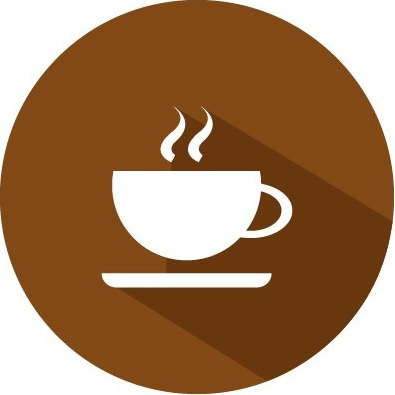

 Cafeteria
Sobre nós
Somos apaixonados por café e pela experiência de compartilhá-lo com os nossos clientes. O Café Delícia começou como um sonho e se tornou realidade em 2010, quando abrimos nossa primeira cafeteria no coração da cidade. Desde então, temos nos dedicado a servir os melhores grãos de café, preparados por baristas experientes, em um ambiente acolhedor e amigável.
Nosso Objetivo
Nosso objetivo é proporcionar momentos de prazer e conforto a todos os que nos visitam, seja para uma rápida pausa durante o expediente ou para uma conversa descontraída entre amigos. Valorizamos a qualidade, a autenticidade e o cuidado em cada xícara que servimos.
fds
Nosso objetivo é proporcionar momentos de prazer e conforto a todos os que nos visitam, seja para uma rápida pausa durante o expediente ou para uma conversa descontraída entre amigos. Valorizamos a qualidade, a autenticidade e o cuidado em cada xícara que servimos.